本章讲述了模型评估与选择（model evaluation and selection）的相关知识：
2.1 经验误差与过拟合（empirical error & overfitting）
精度accuracy、训练误差（经验误差）training error（empirical error）、泛化误差generalization error、过拟合overfitting、欠拟合underfitting；
2.2 模型评估方法（evaluate method）
测试误差testing error、留出法hold-out、分层采样stratified sampling、交叉验证法cross validation、k-折交叉验证k-fold cross validation、留一法leave-one-out（LOO）、自助法bootstrapping、自助采样bootstrap sampling、包外估计out-of-bag estimate、调参parameter tuning、验证集validation set；
2.3 模型性能度量（performance measure）
错误率error rate、查准率（准确率）precision、查全率（召回率）recall、P-R曲线、平衡点BEP、F1/Fβ、混淆矩阵、ROC曲线、AUC、代价敏感cost-sensitive、代价矩阵cost matrix、代价曲线cost curve、期望总体代价；
2.4 模型比较检验（comparation & testing）
假设检验hypothesis test、拒绝假设、t-检验t-test、Friedman检验、后续检验post-hoc test、Friedman检验图；
2.5 偏差与方差（bias & variance）
偏差-方差窘境bias-variance dilemma；
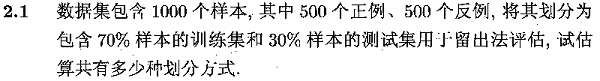
根据分层采样原则，共有方法：
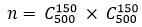.
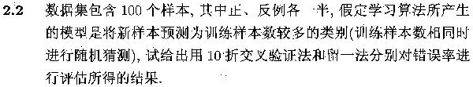
因为测试集被划分到训练样本中多的类，设一共100个样本：
留一法：测试集1个样本，训练集99个样本且有50个与测试集真实类别不同，故测试集无法被划分到正确的类，错误率100%；
交叉验证法：在采用分层抽样的前提下，分类靠随机猜，错误率因为50%；
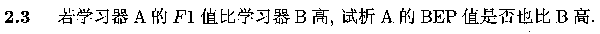
首先给出度量定义：
BEP：是P-R曲线上的平衡点坐标值，BEP = P = R (即准确率 = 召回率)；
F1值：是P与R的调和平均，1/F1 = (1/P + 1/R) / 2;
所以 BEP = F1 (当P = R时) -> BEP(A) > BEP(B).
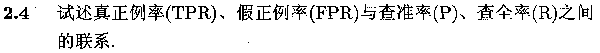
给出混淆矩阵示例如下：
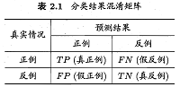
然后给出各度量的定义式：
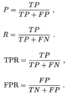
详细解释是：
直接给出大致思路如下图：
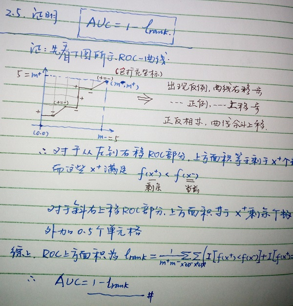
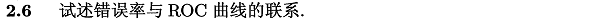
错误率可由代价-混淆矩阵得出；
ROC曲线基于TPR与FPR表示了模型在不同截断点取值下的泛化性能。
ROC曲线上的点越靠近（1，0）学习器越完美，但是常需要通过计算等错误率来实现P、R的折衷，而P、R则反映了我们所侧重部分的错误率。
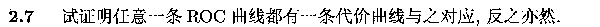
ROC曲线的点对应了一对（TPR,FPR），即一对（FNR,FPR），由此可得一条代价线段（0,FPR)--(1,FNR），由所有代价线段构成簇，围取期望总体代价和它的边界--代价曲线。所以说，ROC对应了一条代价曲线，反之亦然。
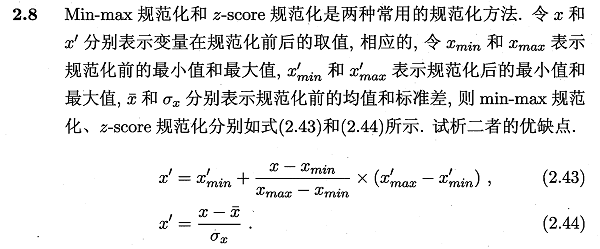
比较见表：
| Max-min | z-score |
|---|---|
| 方法简单 | 计算量相对大一些 |
| 容易受高杠杆点和离群点影响 | 对离群点敏感度相对低一些 |
| 当加入新值超出当前最大最小范围时重新计算所有之前的结果 | 每加入新值都要重新计算所有之前结果 |
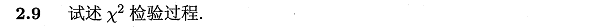
可直接参考：卡方检验 - 百度百科